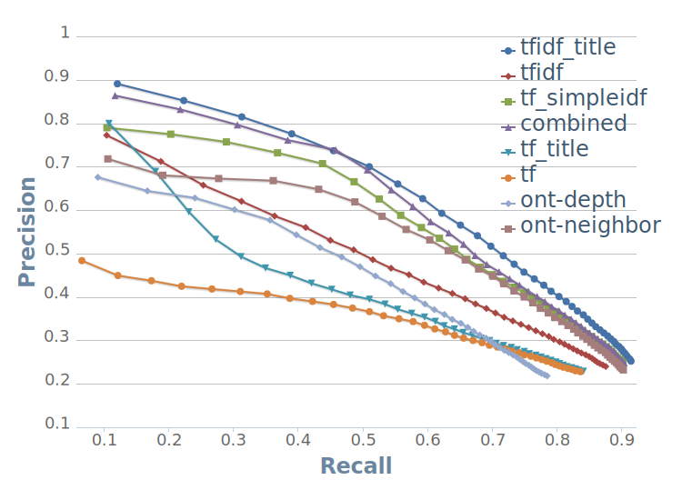
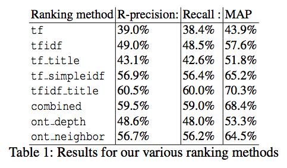
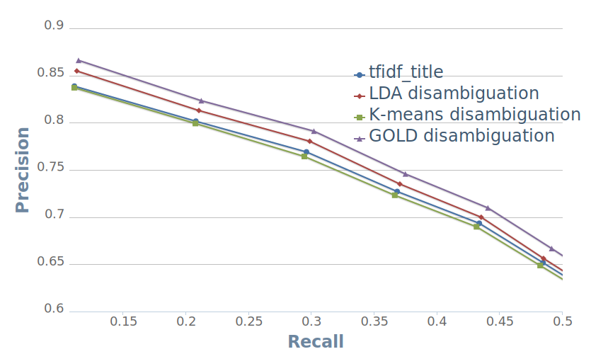

Your browser doesn't support the features required by impress.js, so you are presented with a simplified version of this presentation.
For the best experience please use the latest Chrome, Safari or Firefox browser.
Introduction
Changing nature of scientific research
Past: small isolated groups
Present: collaboration of scientists with heterogeneous expertise. Data-driven
science.

Page 2/20
Introduction
Changing nature of scientific research
- Need for effective knowledge organization
- Need for effective knowledge discovery
Page 3/20
Introduction
Better system components
- Field-specific ontology
- Connection of the ontology to research material

 Page 4/20
Page 4/20
Our use-case: ontology-based paper tagging
Two tasks:
- Improving the relevance of automatically selected tags in ontology-based information systems
- Effective tag disambiguation
Example:
Linear-Nonlinear-Poisson Neurons Can Do Inference On Deep Boltzmann Machines
Boltzmann machine
Gibbs sampling
Deep learning
Machine learning
Bayesian approach
Sigmoid function
Exponential function
Neural network
Short Term Memory
Synaptic plasticity
Recurrent neural network
Page 5/20
ScienceWISE System
New papers discovery
 Page 6/20
Page 6/20
ScienceWISE System
Tagging process
- Concepts are extracted from TeX source
- Matched against ontology with synonymy
 Page 7/20
Page 7/20
ScienceWISE System
Disambiguation process
Ambiguity example
 Page 8/20
Page 8/20
ScienceWISE System
Ambiguity impact
Dark Matter (1 occurr.) +
DM (10 occurr.)

Density matrix
Dark Matter

Yields more relevant results
Page 9/20
Experimental settings
Datasets
In the experiments we used real dataset collected by ScienceWISE system.
Data for tag recommendation:
- Kept data from top-5 most active users
- 1376 papers
- 15 083 total tags, 2 157 distinct concepts
Data for tag disambiguation:
- 2 400 papers from 6 different categories on arXiv.org, equally distributed
Data available at sciencewise.info/media/iswc/
Page 10/20
Experimental settings
Evaluation metrics
Per paper:
- Precision@k - number of relevant tags out of k recommended tags
- Recall@k - ratio between the number of relevant tags and the total number of relevant tags
- R-precision - Precision@R, where R is the total number of relevant tags
- Average precision - average of Precision@k values where a
relevant tag is retrieved over the set of total relevant tags
Overall: Mean Average Precision (MAP)
Page 11/20
Experimental settings
Techniques
Baseline: TF-IDF weighting on the ontological concepts
- TF - ranks tags by counting the number of tags in the article
- TF-IDF - extends previous one by applying IDF score, score is calculated on per category basis
- TF + SimpleIDF - excludes too general concepts using the simple attribute,
created manually by experts
- TF + Title - promotes tags from the paper title in the final ranking
- TF-IDF + Title
Page 12/20
Experimental settings
Techniques (continued)
- Combined - combines TF-IDF + Title, but utilizes simpleIDF to reduce computational complexity
- Ont-depth - promotes more specific concepts using the concepts' depth in the ontology
- Ont-neighbor - promotes neighbors of highly ranked concepts
Page 13/20
Results
Precision/Recall graph

Page 14/20
Results
Overall Table

Page 15/20
Results
Summary: Part I
The careful use of specific properties of the ontology (basic concepts)
together with information about terms positions in the document (title, abstract)
allows to significantly increase precision in comparison with state-of-art methods.
Page 16/20
Results
Tag disambiguation
Task 1: split papers into clusters using the following
approaches:
- Latent Dirichlet Allocation (LDA)
- K-Means clustering
Features used in both methods: paper concepts
Task 2: resolve ambiguity based on clustering
- LDA: 75%, raises to 88% by adding ontological information (e.g. most
specific concept)
- K-Means: 47%
Page 17/20
Results
P/R graph for disambiguation task

Page 18/20
Summary: Part II
- Compared to classic tag recommendation, the proposed techniques select tags
directly from a collaborative, user-driven ontology
-
Community-authored ontology + information about the position of the concepts in
documents allows to significantly increase precision overt standard methods.
-
Tag disambiguation is an essential part of the tag recommendation process and
use of the ontological information here can lead to greater results.
Page 19/20

 Page 1/20
Page 1/20